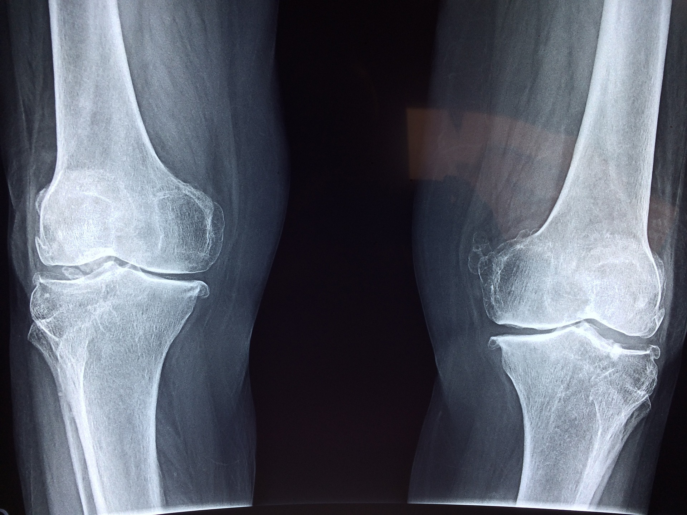

Services We Provide

Laboratory Service
Laboratory Services encompass a wide range of diagnostic tests and procedures performed on patient samples such as blood, urine, and tissue. These tests aid in the detection, diagnosis, and monitoring of various medical conditions, including infections, metabolic disorders, cancer, and organ function assessments.

Pediatrics
Pediatrics is a medical specialty focused on the healthcare of infants, children, and adolescents. Pediatricians diagnose and treat a wide range of childhood illnesses, provide preventive care, administer vaccinations, and monitor growth and development.
ICU (Intensive Care Units)
The ICU is a specialized hospital department that provides intensive care and monitoring for critically ill patients. It is equipped with advanced medical technology and staffed by highly trained healthcare professionals to provide constant supervision and specialized treatment.

Emergency Services
Emergency Services are crucial for immediate medical attention in life-threatening situations. These services provide rapid assessment, stabilization, and treatment of critical conditions, such as trauma, severe injuries, heart attacks, strokes, and other medical emergencies.

Orthopedic
Orthopedics is a branch of medicine focused on the musculoskeletal system. Orthopedic specialists diagnose and treat conditions related to bones, joints, muscles, ligaments, and tendons. They manage fractures, perform joint replacements, and provide care for sports injuries and other orthopedic disorders.

Cardiology
Cardiology is the branch of medicine that deals with the diagnosis and treatment of heart-related conditions. Cardiologists evaluate and manage heart diseases, perform diagnostic tests like ECG and echocardiography, provide preventive care, and offer interventions such as angioplasty and bypass surgery